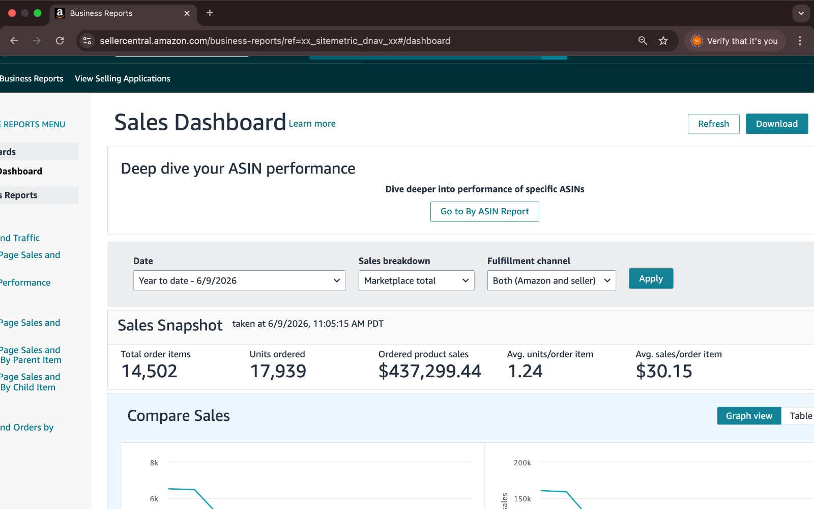

This Amazon FBA Private Label growth case study demonstrates the power of strategic account management and data-driven decision-making. Within just six months, the business generated an impressive $437,299.44 in sales on the Amazon USA marketplace, reflecting strong product demand and a scalable growth strategy. These results were achieved through a combination of effective PPC optimization, listing enhancement, inventory planning, and continuous performance monitoring. Every aspect of the account was managed with a focus on maximizing visibility, improving conversions, and maintaining healthy profit margins. By analyzing performance metrics and making informed decisions, the business was able to scale consistently while maintaining operational efficiency. A key factor behind this success was the implementation of strategic advertising campaigns and ongoing listing improvements. Optimized PPC campaigns helped drive targeted traffic, while enhanced product listings increased conversion rates and strengthened organic rankings. Effective inventory planning ensured uninterrupted sales momentum and prevented stock-related issues that could hinder growth. Rather than focusing on short-term wins, this approach was built around sustainable and profitable expansion. Continuous monitoring and data-driven optimization allowed the account to adapt to market trends and seize growth opportunities. This milestone highlights the importance of combining proven Amazon growth strategies with disciplined execution to achieve long-term success in the competitive USA marketplace.